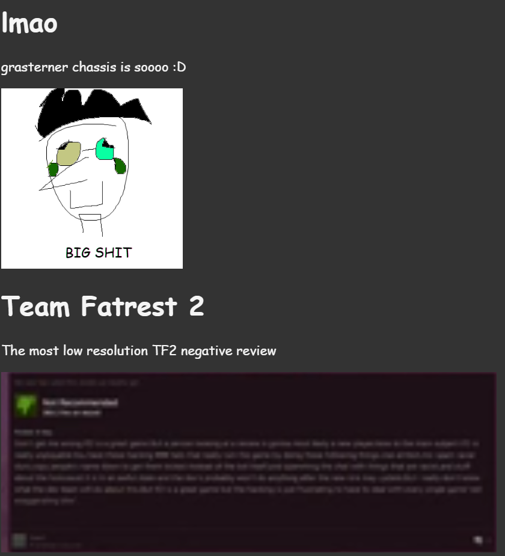
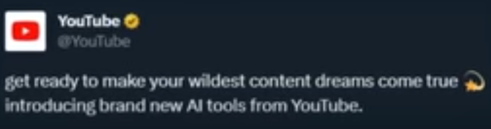

grasterner chassis is soooo :D

The most low resolution TF2 negative review
I really needed this I genuinely do not know what I would have done without this.

Leonardo Da Vinci is rolling in his grave right now

üëÅÔ∏è_üëÅÔ∏è

On September 30 2023 Bericulas Basement was made, On the first day the website had [[KEYGEN]] RGB color changing images in celebration for the creation of Bericula's Basement, please note that this basement is only meant for friends as outsiders without any context may get confused. In any case it is now October 1 2023 and the Special Day RGB must go, It will come by again some other day. These are the last moments of Special Day RGB 1
Who asked for this, it was so bad the quality gave up
